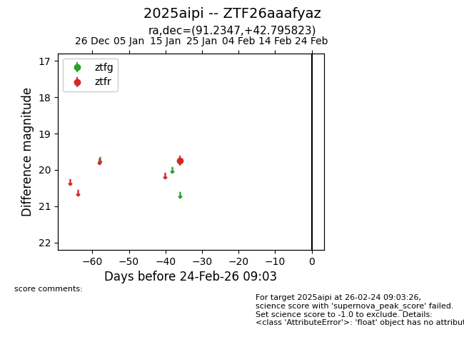
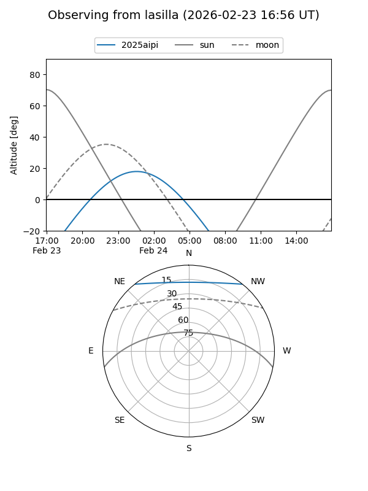
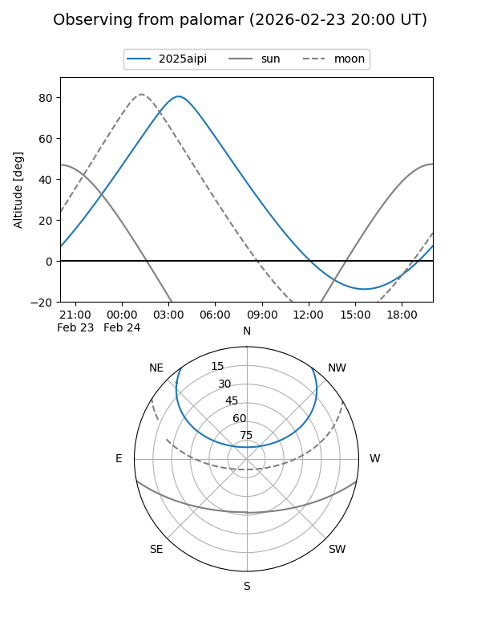

2025aipi
Target 2025aipi at 2026-01-28 18:46
Aliases and brokers:
FINK: link
Lasair: link
ALeRCE: link
TNS: link
YSE: link
alt names
ZTF26aaafyaz (ztf,fink_ztf)
2025aipi (tns,yse)
Coordinates:
equatorial (ra, dec) = 91.2347,+42.79582
equatorial (HMS+DMS) = 06:04:56.33,+42:47:44.96
galactic (l, b) = (169.8535,+10.26485)
Flags:
Photometry:
last ztfr=19.75
1 ztfr detections
Lightcurve

Visibility


Additional plots